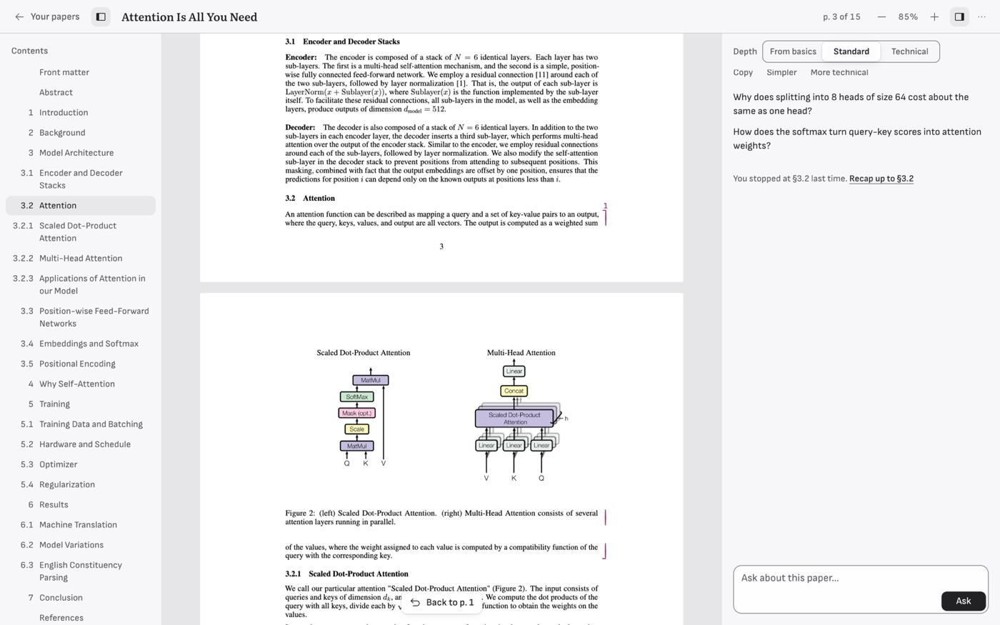

PaperMind
An agent that reads ML papers with you and explains them at your level. Answers cite the exact lines they come from, and it points out the prerequisites you’re missing first.
- Hybrid BM25 + dense retrieval hits 94.8% recall@10 on a 174-question benchmark over 8 papers.
- Distilled Claude’s answers into Mistral 7B with QLoRA SFT, then DPO, served with vLLM. Calibration accuracy went up 18%.
- A hand-written ReAct loop drives three MCP servers, including a Neo4j graph of 359 ML concepts.
- Claude
- FastAPI
- FAISS
- Neo4j
- Redis
- vLLM
- React